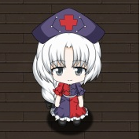
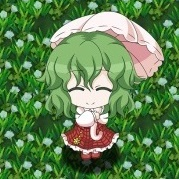

기본 출처 : 주의해야 할 몬스터 (PS Vita 공식 카페) |작성자 에프랑지아
업데이트한 사람 : starwindz
1. 치르노(チルノ) - 냉기를 조종(요정)
2. 파츄리 노우릿지(パチュリー・ノーレッジ) - 마법을 사용(마법사)
3. 레밀리아 스칼렛(レミリア・スカーレット) - 운명을 조종(흡혈귀)
4. 플랑드르 스칼렛(フランドール・スカーレット) - 모든 사물을 파괴(흡혈귀)
1. 첸(橙) - 요술(요수; 식신; 요괴고양이)
2. 콘파쿠 요우무(魂魄妖夢) - 검을 다룸(반인반령)
3. 사이교우지 유유코(西行寺幽々子) - 죽음을 다룸(망령)
4. 야쿠모 란(八雲藍) - 식신을 사용(요수; 구미호; 식신)
5. 야쿠모 유카리(八雲紫) - 경계를 조종(요괴; 스키마온나)
1. 이나바 테위(因幡てゐ) - 인간에게 행운을 줌(요수; 요괴토끼)
2. 레이센 우돈게인 이나바(鈴仙・優曇華院・イナバ) - 광기를 다룸(달토끼)
3. 호라이산 카구야(蓬莱山輝夜) - 영원과 수유(須臾; 짧은 시간)를 다룸(월인; 봉래인)
4. 야고코로 에이린(八意永琳) - 모든 약을 만듬(월인)
5. 카미시라사와 케이네(上白沢 慧音) - 역사를 없앰(수인; 워 하쿠타쿠)
1. 메디슨 멜랑콜리(メディスン・メランコリー) - 독을 사용(요괴; 츠쿠모가미)
2. 카자미 유카(風見幽香) - 꽃을 조종(요괴)
3. 샤메이마루 아야(射命丸文) - 바람을 다룸(텐구; 카라스텐구)
4.1 오노즈카 코마치(小野塚小町) - 거리를 조종(사신)
4.2 시키 에이키 야마자나두(四季映姫・ヤマザナドゥ) - 옳고 그름(흑백)을 구분(염마)
5. 나가에 이쿠(永江衣玖) - 공기를 읽음(요괴; 용궁의 사자)
6. 히나나이 텐시(比那名居天子) - 대지를 다룸(천인)
7. 키리사메 마리사(霧雨魔理沙) - 마법을 사용(물건을 훔침)(인간)
8. 해삼쨩 시리즈
1. 아키 미노리코(秋穣子) - 풍년을 담당(풍년의 신)
2. 카기야마 히나(鍵山雛) - 액을 모음(액신(厄神))
3. 이누바시리 모미지(犬走椛) - 천리 앞까지 내다 봄(텐구; 백랑텐구)
4. 코치야 사나에(東風谷早苗) - 기적을 일으킴/바람을 다룸(인간(현인신))
5. 야사카 카나코(八坂神奈子) - 건(乾, 하늘)을 창조(신(신령, 아마츠카미))
6. 모리야 스와코(洩矢諏訪子) - 곤(坤, 땅)을 창조(신(쿠니츠카미))
1. 키스메(キスメ) - 도깨비불을 떨어뜨림(요괴 : 츠루베오토시(釣瓶落とし: 두레박 떨굼이))
2. 미즈하시 파르시(水橋パルスィ) - 질투심을 다룸(요괴; 하시히메(橋姫))
3. 호시구마 유기(星熊勇儀) - 괴력난신을 가짐(오니)
4. 코메이지 사토리(古明地さとり) - 마음을 읽음(요괴; 사토리)
5. 카엔뵤 린(火焔猫燐) - 시체를 가져감(요수; 카사(화차))
1. 타타라 코가사(多々良小傘) - 인간을 놀라게 함(요괴; 카라카사)
2. 무라사 미나미츠(村紗水蜜) - 수난사고를 일으킴(배유령)
3. 토라마루 쇼(寅丸星) - 재보가 모임(요괴)
4. 히지리 뱌쿠렌(聖白蓮) - 마법을 사용(마법사)
1. 카소다니 쿄코(幽谷響子) - 소리를 반사(야마비코)
2. 카쿠 세이가(霍青娥) - 벽을 통과(사선(邪仙))
3. 소가노 토지코(蘇我屠自古) - 벼락을 일으킴(령(원령))
1. 키신 세이자(鬼人正邪) - 뭐든지 뒤집어 버림(요괴; 아마노자쿠)
1. 키신 사구메(稀神 サグメ) - 입 밖에 낸 것을 역전(달의 주민)
2. 클라운피스(クラウンピース / Clownpiece) - 인간을 미치게 함(요정)
3. 순호(純狐) - 순화(純化)함(신령)
라이코, 와카사기히메, 카센, 우츠호
특성 : 아이템을 얼림. 얼어붙은 아이템은 녹을 때까지 사용불가.
대처 : 봄이왔어요 인을 사용하면 아이템이 얼지 않고, 근접한 치르노와 레티를 매 턴마다 일정확률로 처치함.
특성 : 죽을 때 폭발하고, 경험치와 아이템을 드랍하지 않음.
대처 : 지뢰명장인을 사용하면 폭발 피해를 줄일 수 있음. 다단히트로 한번에 죽이면 폭발하지 않음.
특성 : 힘을 감소시키거나 힘 최대치를 감소시킴
대처 : 마늘 인을 사용. 참고로 다른 힘감소효과를 막는 항체인으로는 막을 수 없음.
특성 : 그냥 쎔....
대처 : 저층에서는 그런대로 싸울만 하지만 고층에서, 특히 엄청난 등급의 플랑도르라면 도망치는것이 상책. 스펠카드인 근절 그 순간이었다 를 사용하여 해당 층에서 아예 제외시키는 것이 가장 깔끔함. 방안의 모든 아이템을 파괴하고, 모든 몹과 캐릭터에게 피해를 주는 기술이 있기 때문에. 플랑도르가 있는 층에서는 아이템 파밍과 렙업은 포기하고 빠르게 올라가는 것이 좋다.

특성 : 다단히트 공격으로 등급이 상승할수록 다단히트 횟수가 크게 증가하여 엄청난 공격력을 보여준다. 게다가 기본적으로 가속상태라서 도망치기도 힘들다.
대처 : 회복인 사용. 1회 히트할 때마다 일정량의 체력을 회복시켜주기 때문에, 첸의 공격력이 상당히 많이 상쇄된다. 그래서 사실상 첸 때문에 회복인이 필수다.
특성 : 죽으면서 반령소환. 반령은 기본 초경상태에 다른 몹에게 흡수되면 그 몹의 등급을 상승시킴.
대처 : 어떻게 해서든 반령을 처치한다. 기본 초경상태이나 레벨이나 등급에 관계없이 체력이 3이므로 세대만 때리면 되고, 스펠카드에는 본 데미지를 먹으며, 부유나 유령인을 사용하면 초경상태를 무시하고 피해를 줄 수있다. 중반즈음부터는 오히려 몹 등급을 일부러 올려줘서 광렙을 노릴수도 있다.
특성 : 음식을 훔쳐먹음. 죽음의 저주
대처 : 스키마 내부의 음식은 훔치지 못한다. 죽음의 저주를 걸고나면 전력으로 도망치기 때문에 유유코가 주변에 있으면 반드시 먼저 처치한다. 죽음의 저주 내성인이 있지만 갖추기가 매우 힘들기 때문에 그냥 걸리기 전에 먼저 잡거나 걸리면 걸고 도망가는 유유코를 잡는 것이 상책이다. 영특효 및 영내성인을 갖추는 것도 도움이 될 것이다.

특성 : 장비중인 아이템을 뒤로 쳐냄. 만약 뒤에 몹이나 파트너가 있으면 피해를 주고 아이템이 소멸하기 때문에 반드시 대처를 해야한다.
대처 : 부착인을 사용하면 막을수 있다. 부착인을 찾기 힘들다면 장비에 중석인을 박아주면 그 장비는 뒤로 날아가는 대신 발 밑에 떨어진다.
특성 : 스키마 내부의 아이템 혹은 스키마를 통째로 훔쳐감. 그리고 훔쳐간 아이템을 전방으로 사출함.
대처 : 방범인은 통하지 않고 경문인을 사용하면 막을 수 있지만, 경문인을 사용하면 중석인을 사용할 수 없기때문에 범용성이 더 큰 중석인을 선택하는 것이 좋고, 유카리가 아이템을 훔쳐 가더라도 마리사처럼 훔치고 나서 도망다니지는 않기 때문에 사출하여 소멸시키기 전에 빨리 잡아서 아이템을 되찾으면 된다.
특성 : 함정을 여기저기 설치하고 다니며, 기본 초경, 2배속 상태. 한 턴이 네칸씩 이동함.
대처 : 귀인을 사용하여 보이거나 사거리 내에 들어오면 잡아주면 된다. 아니면 그냥 무시하고 안약을 먹거나, 함정이 많이 깔리기 전에 올라가는 것이 좋다.
특성 : 혼란 광화 환각 최면 상태이상을 건다. 특히 1턴간 무작위 행동을 하게만드는 최면의 경우 운이 없으면 본장비를 투척하거나, 되돌릴수 없는 스키마에 집어넣는 등의 행동을 하게 만들 수 있다.
대처 : 최면해제 인을 사용하면 최면을 막을 수 있으나 범용성이 매우 떨어진다. 광화저항으로 광화정도만 막고, 아이템 소실 방지를 위해, 환금의 스키마나 변화의 스키마 같은 것은 들고다니지 않도록 하자.
특성 : 여러가지 기술을 사용하는데, 그중에서도 맵 전체에 함정을 다수 까는 기술이 가장 위협적이다.
대처 : 안약을 항상 구비하고 다니자. 그리고 함정 깔기전에 카구야를 최 우선적으로 처치한다.

특성 : 원거리 공격을 하면서 수면 폭발 회심 등의 공격을 한다.
대처 : 폭발이나 회심은 괜찮지만, 수면을 거는게 아주 위협적일 수 있다. 체력이 낮으니 원거리 응사를 해서 빨리 잡는 것이 좋다.

특성 : 역사먹기를 이용해서 플레이어의 레벨을 1 낮춘다. 초반에는 별 거 아니지만, 레벨 1 올리기가 매우 힘들어지는 후반으로 가면 갈수록 당했을 때의 짜증도가 늘어난다. 백택화하면 역사먹기의 특수능력이 사라지는 대신 박치기로 플레이어를 날려버린다. 이로 인해 아이템이 떨어져버리는데, 스키마가 떨어져서 깨지기도 하고, 물에 빠졌을 경우에는 그대로 아이템 로스트가 되어버리기 때문에 매우 위협적.
대처 : 레벨저하 방지인과 중석인을 통해 막을 수 있다.
특성 : 각종 상태이상으로 무장하고, 엄청난 방어력을 가짐.
대처 : 사용하는 상태이상의 가지수가 많고, 대처도 힘든 상태이상이 많다. 부상신 인을 이용해서 그냥 최대한 빨리 잡는것이 상책이다.

특성 : 평소엔 적대적이지 않다가, 건들거나 꽃 지형을 밟으면 격앙상태가 된다. 기본적으로 스펠카드와 부적, 탄막 공격이 무효이며, 폭발도 듣지 않는다. 격앙 상태가 되면 괴력상태가 되고 모든 상태이상 해제 및 면역이 되고, 100%확률로 반격, 100%확률로 회심공격, 원거리에서는 딜레이 없는 마스터스파크 공격을 퍼붓는다.
대처 : 웬만해선 건들지말것.... 참고로 격앙상태가 아닐때 잡으면 경험치와 아이템드랍이 없는데, 다단히트로 한방에 잡으면 격앙상태가 되면서 죽기 때문에 경험치와 아이템을 받을 수 있다.
특성 : 캐릭터를 날림.
대처 : 중석인을 방어구에 사용하면 막을 수 있다. 단, 엄청난 등급의 아야는 중석인을 무시한다. 즉 대처법이 없다.
특성 : 각각은 그냥저냥 평범한 몹이지만, 둘이 뭉치면 코마치쪽에 2배속 버프가 걸림. 평소엔 둔속상태인 몹이 2배속이 걸리니 4배 강해짐.
대처 : 시키 에이키부터 빨리 잡는다.

특성 : 원거리에서 등급에 따라 혼란, 가위눌림, 둔족등의 상태이상을 걸면서 공격.
대처 : 다른 상태이상보다 가위눌림이 매우 치명적이다. 피해를 입기거나 여러 턴이 지나기 전까지 행동불가 상태인데, 이쿠 여럿이 계속해서 가위눌림을 걸어대면 움직이기 매우 힘들어진다. 따라서 가위눌림 저항인을 갖추는 것이 좋다.
특성 : 지진공격. 특히 엄청난 등급의 텐시는 층 전체공격이기 때문에 부유상태가 아니라면 피할 수가 없다.
대처 : 엄청난 등급의 텐시를 만날 때쯤이면 지진 좀 맞아도 별 탈이 없지만, 문제는 파트너까지 그렇게 장비를 키워주기가 힘들다. 하지만 이것도 파트너에게 재생약을 만들어서 던져주면 재생효과로 꽤 오랫동안 지진 피해를 상쇄하고, 기존에 입은 피해도 모두 회복할수 있다.

특성 : 아이템을 훔쳐 달아남. 보이지 않아도 감지하고 마스터스파크 사용.
대처 : 방범인을 쓰면 아이템을 훔치지 못함. 방범인이 추가인으로 박혀 있다면, 방범인을 추출해가기 때문에, 다른 마리사의 절도에 노출된다. 방범인을 고유인으로 사용하면 추출안됨. 아이템을 훔치고나면 성공했건 말건 랜덤위치로 순간이동 후 빗자루를 타며 부유, 가속상태가 되고, 이때부터는 마스터스파크를 원거리에서 직선 및 대각선에 놓이면 사용하는데, 공격력이 매우 위협적이다. 특히 엄청난 마리사는 훔치기를 도하지 않아도 처음부터 빗자루를 타고 가속상태라서 마리사가 있는지 아직 확인도 못했는데 마스터스파크가 여기저기서 날아오기도 한다. 이런땐 빠르게 다음층으로 도망치는게 낫다.
특성 : 시나리오중에는 볼 일이 없지만, 그외 던전에선 간혹 볼 수 있다. 딱히 스킬이 있는 것도 아니고 공격력도 매우 낮지만, 기본 초경상태이다. 길목 같은 곳에서 길막하고 있으면 이도저도 못하는 상황이 발생할 수도 있는 생각보다 매우 무서운 몹이다.
대처 : 초경상태라 특효인을 사용해서 공격해야 하는데 얘네들은 종족도, 다른 특성도 없다. 따라서 일반적인 방법으로는 약점을 찌를수가 없고, 초경특효인은 추가인으로 존재하지 않고, 미스트 루팅이라는 아이템의 고유인으로만 존재하기 때문에 갖추기 어렵다. 가장 간단한 방법으로는 봉인부적으로 초경상태를 없애고 잡는 방법이 있으나 다수 출현하면 1:1로 다 봉인을 걸어줘야 한다. 다른 방법으로는 가속특효인을 사용하면서 층내 모든 대상에게 가속을 걸어주는 적속 메이드 인 헤븐을 사용하면 쉽게 잡을수 있다. 스펠카드 공격으로 피해를 줄수는 있으나 생각보다 체력이 많아서 잘 죽지 않는다.

특성 : 인벤토리 내 아이템을 떡으로 바꿈.
대처 : 초반엔 유용한 식량조달책. 하지만 아이템을 지켜야 하는 경우엔 아이템 보호 부적으로만 막을수 있다.

특성 : 저주를 검
대처 : 저주 저항 인을 사용. 저주를 해제하는 스펠카드를 들고 있어봤자, 그게 저주에 걸리면 사용이 안되기 때문에 반드시 저주 저항 인을 구비하도록 하자.

특성 : 엄청난 등급의 모미지는 방안의 모든 몹에게 수면저항과 놀람상태를 걸어준다.
대처 : 다른 몹 조합에 따라 그냥 빨리 다음 층으로 넘어가는 선택을 하는 것이 좋다.
특성 : 몹에게 각종 버프와 함께 놀람 상태를 걸어준다.
대처 : 다른 몹 조합에 따라 그냥 빨리 다음 층으로 넘어가는 선택을 하는 것이 좋다.
특성 : 장비의 강화수치를 깎는다.
대처 : 노화저항인을 사용한다.
특성 : 죽으면서 저주를 건다.
대처 : 저주저항인을 사용한다.
특성 : 초반등급에선 별거아니지만, 등급이 올라갈수록 스킬 추가 없이 깡스텟만 엄청 쎄진다.
대처 : 나오면 일단 때려보고, 그리고 한대 맞아보고 잡을지 말지를 빠르게 판단한다. 후반부에 만났다면 한방에 죽을 수도 있으니 웬만하면 도망간다.

특성 : 인벤토리가 가득차 있으면 아아템 하나를 파괴함. 엄청난 등급의 파르시는 인벤토리에 여유가 1개 있어도 파괴함.
대처 : 항상 인벤토리를 가득 채우지 않는다. 가득 차 있더라도, 파르시가 보이면 바로 아이템을 바닥에 떨구거나, 스키마에 넣어서 빈칸을 만들면 된다. 아이템 보호부적이 있으면 막을 수 있지만 원거리에서 연속으로 사용하기도 하기 때문에 아이템 보호부적만으로 막기는 역부족이다.
특성 : 캐릭터를 함정이나 파트너 혹은 몹에게 던짐.
대처 : 중석인을 사용하면 던져지지 않는다. 단 유기가 괴력상태면 중석인이 있어도 던져짐.
특성 : 각종 스펠카드를 사용. 그중 함정을 다수 생성하는 스펠카드가 가장 위협적이다.
대처 : 안약을 준비하자. 함정이 너무 많아졌다 싶으면 그냥 다음 층으로 넘어가도록 하자.

특성 : 몬스터가 죽는 시간 시체를 가지고 워프하기 떄문에 경험치를 얻을 수 없게 한다.
대처 : 보이는 순간 반드시 먼저 처치한다.
특성 : 놀람상태를 검
대처 : 몹 조합 상태를 보고, 빠르게 다음 층으로 넘어가자.
특성 : 물에서 잠복상태로 있다가 지나갈 때 공격하거나 수난 사고를 걸어온다. 수난 사고에 걸리면 강제로 다음 층으로 넘어가면서 아이템 몇개가 소실된다.
대처 : 닻 인으로 완전히 막을수 있고, 아이템 보호부적을 소지하고 있으면 아이템 소실은 막을수 있다.

특성 : 장비의 인을 추출함.
대처 : 불패 인을 사용하면 막을 수 있다. 추출 당하더라도 잡으면 돌려받을수 있으나, 쇼우님 이상등급에선 추출하자마자 순간이동으로 도망가므로, 되도록 불패 인을 사용하도록 하자.
특성 : 상당히 높은 빈도로 특수능력인 초인「히지리 뱌쿠렌」을 사용하여 빨간색, 노란색, 파란색의 3가지 오라 가운데 하나를 발동한다. 빨간색은 미스가 뜰 때까지 통상공격을 연속으로 가하고, 노란색은 배속상태가 되며 때때로 순간이동을 포함한 행동을 하며(순간이동 자체에는 따로 턴소모가 없다), 파란색은 이쿠와 마찬가지로 통상공격이 맞지 않는 상태가 된다. 특히나 위협적인 것이 빨간색으로 운이 나쁘면 이쪽은 손도 써보지 못한채로 골로 가는 경우도 나온다.
대처 : 특별한 대처방안이 없는 것 같다. 근절 스펠카드를 사용할 수 밖에 없다.
특성 : 바닥의 아이템이나 함정을 던짐. 던져진 아이템은 인벤토리나 스키마로 들어가가도 하고, 우리가 던진 것처럼 효과를 발휘하기도 한다. 근절 그순간이었다 스펠카드가 던져져서 맞게되면 즉사하고, 거액의 돈에 맞아서 죽을 수도있는 생각보다 아주 위협적인 능력이다.
대처 : 캐치 인을 사용하면 던져진 아이템이 무조건 발아래에 놓인다.
특성 : 벽을 통과함. 벽안에서 공격하면 반격이 불가능함.
대처 : 해방인을 사용하면 벽 안쪽의 적도 공격이 가능하다. 하지만 해방인은 몇몇 양손무기의 고유인으로만 존재하기 때문이 융합이 아니면 쓰기가 힘들다.
특성 : 원거리 공격과 토지코씨 이상부터는 가위눌림 부여.
대처 : 둔족과 그림자묶기는 탄막 공격으로 응사가 가능하지만, 다수의 토지코씨가 여러방향에서 가위눌림을 걸어대면 제대로 움직이기가 힘들다. 가위눌림 저항인을 반드시 구비하자.
특성 : 각종 게이지를 뒤집음. 체력바를 뒤집어서 만피에서 체력을 1로 만들기도 하는가 하면, 만복도를 뒤집기도 하고, 힘이나 탄막게이지를 뒤집기도 한다.
대처 : 달라붙기전에 빨리 잡는게 상책이다. 뒤집을 수 있는 한계범위가 있긴 한데 그런거 신경쓰지말고 그냥 빨리 잡아놓자.

특성 : 사구메님 이상에서 사망시 자신을 죽인 캐릭터가 근접해 있으면 반격기로 그 캐릭터의 체력을 1로 만들고 본인은 체력을 모두 회복함.
대처 : 치유인이 필수다. 반격기에 맞은 후 다시 공격하여 체력을 회복해야하기 때문. 치유인에 반격인까지 있으면, 반격기를 맞고 반격하여 그 턴이 바로 체력을 채울수 있기 때문에 편하다. 기뢰설치나 관통형 탄막 공격은 별로 무섭지 않으나 저 반격기는 회복수단이 없으면 매우 치명적이다.
특성 : 광화상태로 만들고 본인은 광화상태의 대상에게 공격받지 않음.
대처 : 광화저항인을 나와 파트너 둘다 사용한다. 만약 광화저항인이 하나밖에 없는 경우엔 파트너를 먼저 주는것이 좋다. 내가 광화에 걸려 파트너를 죽여도 나중에 부활시키면 되지만, 파트너가 광화에 걸려 내가 죽으면 게임오버이기 때문이다.
특성 : 이런저런 버프를 걸어준 후, 버프와 상태이상을 모두 해제시키며 해제시킨수x10%의 피해를 준다. 단, 무적상태를 해제당하면 최대 체력의 10배의 피해를 입고 즉사한다.
대처 : 뭔가 버프를 받은 후에 해제당하기전에 잡는것이 가장 좋다. 체력비례 피해를 입기는 하지만, 종족 내성인으로 감소가된다. 따라서 피해 감소비율이 높은 신 내성 인을 고유인으로 가지고 있으면 해제를 당해도 생각보다 큰 피해를 입지 않는다. 단, 걸어주는 버프가 랜덤이다보니 그중에 무적이 껴있는 경우가 있는데, 이러고 해제당해서 죽었다면, 그냥 뺑소니 당했다고 생각하고 재시작을 하도록 하자......